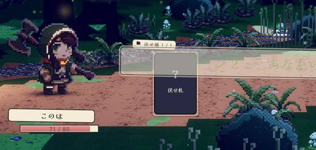

| 現在 | 狩人の仕掛け 伏せ札は「獣道に張った仕掛け」。魔物は月明かりで育った獣なので、緑の茨も青の呪文も白の聖印も黒の呪詛も、獣の通り道に仕掛けとして張れば同じ道具になる。動詞は「仕掛ける」でなく「張る」——罠を張る・網を張る・結界を張る・帳を張る・カウンターを張る（カードゲーム口語）・賭けに張る、の全部を1語で束ねられ、事前払いもブラフも自然に語れる。 | 月と符 「符」とは、月から零れた光を紙に留めたもの。狩人の茨も導師の対抗呪文も聖歌士の聖印も死霊術師の呪詛も、中身は違えど「紙に封じて月だまりに立てる」までは同じ作法で、立てた符は月を吸って淡く光り、魔物はその光を見て身構える。切れば中身が飛び出し、残せば立ったまま次の切り時を待つ。 | 夜の潜伏 世界は永い夜。リーダーは光の粒の輪の中に立ち、その輪の外の暗がり（夜陰）に自分の影を一片ちぎって「潜ませる」。潜んだ影は敵の行動が確定した瞬間に月光の中へ「飛び出す」か、そのまま「潜めておく」か。魔物は潜ませたその夜の「気配」にだけ用心し、翌夜には闇に馴染んだ影を織り込む——現行の鮮度裁定をそのまま世界の言葉で語れる。 | 読みと応じ 伏せ札とは、敵の出方を読んで先に用意しておいた「応じ手」。敵に先に動かせ、太刀筋の実値を見てから「応じる」か「待つ」かを決める——武芸でいう「後の先」を、そのまま盤面の言葉にする。自分の側の言葉は「読み・応じ手・据える・応じる・待つ・読み直す」、敵の側の言葉は「気配・潰す」で分ける。 |
|---|---|---|---|---|
| 伏せ札 | 仕掛け（張った札を指す。文脈で「張った仕掛け」）。ブラフとして置きっぱなしの仕掛けは口語で「案山子（かかし）」 | 符（ふだ）。「伏せ札」は全て「符」。中身の種類で呼び分けない（茨の符・聖印の符と言えるが、UIは「符」で統一）。コストを払う＝符に光を注ぐ、という読みで事前払いを説明する。 | 潜み手（ひそみて）。夜陰に置かれた一手。色を問わない（茨の潜み手／対抗呪文の潜み手／聖印の潜み手／呪詛の潜み手）。「手」＝一手・切り札の語なので、札の中身が茨でも光でも呪いでも「置いた一手」として通る。舞台では影法師（後述）として見える | 応じ手（おうじて）。「据えた応じ手」「応じ手あり」。剣道の応じ技（抜き・すり上げ・返し・打ち落とし）と同じ語で、軽減も返しも打ち消しも全部「応じ」に収まる＝茨も対抗呪文も聖印も呪詛返しも「応じ手」。全カード伏せ可の実験でも「打撃を応じ手に据える」で通る。 |
| 伏せ場 | 獣道（けものみち）。リーダーと敵の間にある「獲物の通り道」。舞台では斜めに抜ける道そのもの。塔の中（幕2石畳・幕3回廊）でも狩人の呼び方として通す（違和感が出たら「通り道」へ退避） | 月だまり（つきだまり）。リーダーの足元、敵側に半歩寄った地面に月の光が溜まった場所。符は月の光の中でしか立っていられない（闇では紙が眠る）ので、符を立てられるのはここだけ＝枠の理由づけ。UIの「伏せ場」パネルの見出しは「月だまり」。 | 夜陰（やいん）。リーダーの足元手前、光の粒の輪の外側の暗がり。「夜陰に乗じる」の成句どおり、潜ませて奇襲する場所。UI見出し「夜陰」・空なら「夜陰は空」 | 読み（よみ）。リーダーの「読み」＝応じ手を置いておく場。「読みに据える」「読みが空く」「読みが埋まっている」。舞台では足元の「間合いの線」として見える（stage_visual参照）。 |
| 伏せ枠 | 仕掛け枠（張れる本数。舞台では「杭」の本数＝かすみは杭2本、二本目の杭で+1） | 月だまり（の数）。「伏せ枠+1」→「月だまり+1」、「伏せ枠2」→「月だまり2つ」。かすみは月だまりが2つ、罠師の茂みは茂みに1枚結べる（+1）、二重の符は月だまりが1つ増える。枠という言葉は消し、地面の光の数がそのまま枠数として見える。 | 夜陰の枠。UIは分数「夜陰 1/2」で表示し、増減は「夜陰+1」と書く（罠師の茂み・二重の符・かすみ）。世界では「影を潜ませられる暗がりの広さ」 | 読みの深さ。表記は「読み N手」（例: 読み 1/1、かすみ＝二手読み）。枠+1は「読み+1手」（罠師の茂み・深読みの巻）。「伏せ枠が空く」→「読みが空く」。 |
| 伏せる | 張る（1E）。「獣道に茨の返しを張る」。※「仕掛ける」は敵の攻撃（攻撃を仕掛ける）と衝突するので使わない。仕掛け直し＝「張り直し（0E）」 | 立てる（符を立てる）。ボタン「立てる(1E)」、ログ「〈茨の返し〉を月だまりに立てた」。立て札の語感で、地面の月だまりに紙を挿す動作＝舞台の見た目と一致する。「貼る／剥がす」の対も検討したが、破壊側を「破る」にすると道化の「見破る」と韻を踏むので「立てる／破る」を採る。 | 潜ませる（ひそませる）。「茨の返しを夜陰に潜ませる（1E）」。同じ札の潜ませ直しは「潜ませ直す（0E）」 | 据える（すえる）。「茨の返しを据える」「対抗呪文を据える」。狙いを据える・腰を据えるの語感で、構えを使わずに"待ちの姿勢"を作る。据えコスト＝伏せコスト。回収したターンの伏せ直し0E＝「据え直しはただ」。置物の「置く」と使い分ける。 |
| 発動 | 放つ（F）。「獲物が来た——放つ？」。縄の張り＝引き金を放す動作で、呪文・聖印・呪詛にも「放つ」で通る。ログの受け身は「〜を放った」。弾け実の罠だけ「弾けた」を許す（名前由来） | 切る（符を切る）。「切り札を切る」の語をそのまま借りる＝この機構が看板の「伏せた切り札」であることと直結。ボタン「切る (F)」、ログ「〈茨の返し〉を切った——返し9」。攻撃の「斬る」と混ざらないよう、文面では必ず「符を切る」と目的語を付ける。 | 飛び出す。確認ウィンドウのボタン名。ログ「茨の返しが夜陰から飛び出した」。窓の見出しは「飛び出す間（ま）」 | 応じる。確認ウィンドウの主ボタン。「茨の返しで応じる」。読み勝ちの換金（onReactionFired）は「応じが決まった」。 |
| 温存 | 待つ（H）。狩人は小物を見送って大物を待つ。「今回は待つ（仕掛けはそのまま残る）」 | 残す（符を残す）。ボタン「残す (H)」＝立てたまま次の切り時を待つ。ログ「〈茨の返し〉を残した（月だまりに立ったまま）」。「温存」の硬さを消し、「まだ切らない」という判断だけを言う。 | 潜めておく。ボタン名。ログ「潜めたまま（用心深い影の斬撃 13 を受けた）」。息を殺して次の機会を待つ、の含み | 待つ。「据えたまま次の出方を待つ」。副ボタン。補助文言「この一撃には応じず、手は読みに残る」。代案: 見合わせる（5字で長い）。「見送る」は報酬スキップと衝突するので使わない。 |
| 回収（1E） | 外す（1E）。「仕掛けを外して手札へ（張ったコストは返らない）」。外した札はそのターンなら張り直し0E | 戻す（符を戻す・1E）。月だまりから引き抜いて懐に戻す。ボタン「戻す(1E)」。注いだ光（コスト）は紙に残らないので返らない。同じターンに立て直せば0E——ただし一度月を吸った紙は二度と光らない（＝見切りの拡張の言い換え）。 | 引き戻す（1E）。「潜み手を引き戻す」＝影を足元へ滑らせて手札に戻す。回収の紐が0Eにするので相性のよい和語 | 読み直す（1E）。読み違いを認めて応じ手を手札へ戻す。「読み直した手は、そのターンなら据え直しがただ」。レリック回収の紐→読み直しの栞。 |
| 伏せ破壊 | 仕掛け壊し（💥）。動詞は「壊す／踏み壊す」。敵名「罠壊し」がそのまま代表になる。「この仕掛けが壊された時：〜」（弾け実の罠） | 符破り（ふだやぶり）。敵の行動種別は「符を破る」、意図表示は「符破り」。罠壊しの break_trap＝「符破り」、嘲る道化の call_bluff＝「見破る」（はったりを見破る、の語をそのまま＝見て、破る）。破られた符は光ごと失われて捨て札へ、中身は出ない。弾け実の罠だけは「破られると弾ける」＝破った瞬間に中身が敵全体へ飛ぶ罰。用語解説「符破り: 立っている符を破って捨て札に送る。光っていなくても破られる（符破りは光でなく符そのものを嫌う）」。 | 炙り出し（あぶりだし）。敵が灯（罠壊し＝提灯を掲げる／道化＝提灯を投げる／梟＝夜目で見抜く）で夜陰を照らし、影法師を炙り出す。炙り出された潜み手は飛び出せない。意図表示「🏮炙り出し」。onSetDestroyed＝「炙り出された時」（弾け実の罠：炙り出されると弾け、敵全体に14）。「光のルール（暖色は灯の範囲だけ）」の中で、敵側が初めて暖色の光を持ち込む演出になる | 潰す／応じ手潰し。罠壊しの break_trap＝「応じ手を潰す」、道化の call_bluff＝「はったりを見破る」（据え置き）。説明: 潰しは気配を問わない——地面の印は隠せないので、敵は据えられた手そのものを踏みに来る。潰される前に読み直せば逃がせる。弾け実の罠＝「潰されると弾ける」。代案「崩す」は門番の崩し打ちと衝突するので不採用。 |
| 伏せ警戒・分岐 | 「仕掛けへの反応」（旧・伏せ反応）／敵タイプ「仕掛け警戒型」。「気配」は据え置きで、意味を狩人の言葉で定義する＝「張りたての仕掛けに残る人の匂い」。分岐予告は 賭け型（鮮度を見る敵）＝「気配あり→○○／気配なし→△△」、罰型（見切り無視＝仕掛けがあれば反応）＝「仕掛けあり→○○／なし→△△」と書き分ける——どの敵が匂いを嗅ぐ獣で、どの敵が仕掛けを見た瞬間に怒る獣かが予告文だけで読める（表示の嘘ゼロの延長）。setAlt のラベル【伏せ時分岐】→【気配で変わる】 | 魔物は月の光で育った生き物なので、符そのものではなく「符の光」を見る。敵の特性タグ「伏せ反応」→「光を見る」、敵タイプ「伏せ警戒」→「光を嫌う」。意図の分岐予告は「光る符あり→○○／なし→△△」。罰型（オーガ・斧鬼・門番・血族・コボルト・罠壊し＝見切り無視）は「符あり→○○」と書き分ける＝「こいつらは光っていなくても符を嫌う」が予告の文面だけで読める。「気配」という抽象語は捨て、「光る符」（そのターンに立てた符）に一本化する。用心深い影の「伏せ検定」＝「光を試す」、探り屋「仕掛けを見たら挨拶の順番を守らない」→「符の光を見たら挨拶の順番を守らない」、読み手の梟「見抜き」は据え置き。 | 「気配（けはい）」で語る。潜ませたそのターン、闇が揺れて魔物に伝わる＝気配。敵の意図分岐は「気配あり→○○／気配なし→△△」（現行「伏せ札あり」は実際には鮮度を見ているので、こちらの方が嘘が少ない）。伏せ警戒型の敵は「気配を嗅ぐ魔物」、探り屋は「気配を嗅いだら挨拶の順番を守らない」、用心深い影は「気配に用心する」。**見切り無視（罰型 setAlt.ignoreFreshness）の敵には「夜目（よめ）」タグを新設**——オーガ・斧鬼・門番・コボルト・罠壊し・血族は夜目が利くので気配に頼らず古い影そのものを見る（意図分岐は「影あり→」と書き分けてもよいが、タグ1つで「この魔物には気配が消えない」と説明できるので分岐表示は「気配あり」で統一を推奨）。⚠警告文は「飛び出すと夜陰が空き、後続の○○が『気配なし』の動きに変わる」 | 気配。敵もこちらを読む——据えた瞬間に立つ「気配」を見て手を変える。分岐予告は「気配あり→○○／気配なし→△△」（現「伏せ札あり／なし」）。用心深い影＝気配を嗅ぐ、探り屋＝気配を見たら挨拶の順番を守らない、読み手の梟＝見抜き（据え置き）。「気配」は分岐条件（setFresh）そのものを指す言葉なので、鮮度の説明と表示が一致する。応じ手を持たない流派（ひばな）には気配の予告を出さない（playerCanSet）。 |
| 鮮度（気配） | 「張りたての仕掛けは人の匂いがする」。獣はそのターンに手をかけて張った仕掛け（＝気配）だけを警戒して足を変える。据え置いた仕掛けは風景に馴染んで獣は織り込み済み（毎ターン張り直す家賃）。同じ札の張り直しは匂いが抜けているので気配にならない。0Eで張った仕掛けは手をかけていない＝匂いがつかない。実際の狩猟の常識（獣は新しい罠を警戒し古い罠には慣れる）そのままなので、用語解説1行で機構が飲み込める | 立てた符はその場で月を吸い、淡い金に光る（舞台では光の粒が2〜3粒まとわりつく）。魔物が見るのはこの光で、ひと晩（1ターン）経つと光は紙に馴染んで沈み、符は闇に溶ける＝「織り込み済み」。だから毎ターン新しい符を立て続けなければ魔物は動かない（家賃）。光らない符は2種類: ①光を注いでいない符（0Eで立てた符＝囮）②一度月を吸った紙（戻して立て直した符）は二度と光らない。用語解説「光る符: そのターンに立てた符。月を吸って光り、魔物はこの光にだけ反応する。次のターンには闇に馴染む。0Eで立てた符・立て直した符は光らない」。罰型と符破りは光でなく符を見る、を対で書く。 | 「気配は一夜だけ」。潜ませたターン、影法師の縁が揺れ・光の粒が遠ざかり・闇に波紋が立つ＝魔物が気づく。翌ターンには闇に馴染んで揺れが止まり、魔物は「いるのは知っている」として織り込む（動きを変えない）。蓋を保つには毎ターン新しい影を潜ませる家賃が要る、がそのまま「夜ごとに新しい気配を立てる」。同じ札の潜ませ直しは「手慣れているので音を立てない」、0Eの潜ませは「足音がしない」＝どちらも気配にならない。夜目の魔物だけは気配に関係なく影を見る | 気配は据えたターンだけ立つ。次のターンには敵に織り込まれて「馴染む」＝気配は消えるが、手は読みに残り応じる権利は失わない。一度見せた手（読み直して据え直した同じ札）に気配は立たない——「敵はもう読んでいる」。0Eで据えた手は腰が入っていない＝気配が立たない（囮としては残る）。潰しだけは気配を問わない（地面の印は隠せない）。舞台では気配＝印から立ち上る光の粒で見せ、翌ターン地面に沈む。 |
| ブラフ | 「案山子」。獣は仕掛けが本物かどうか見分けられない——獣道に何か張ってあるだけで足を変える。放つ気のない札を張るのは案山子を立てるのと同じで、張った時点でコストを払う（＝案山子の材料代）。嘲る道化の call_bluff は「案山子を見破る」＝案山子だと見抜いて踏み壊す。読み合いの説明文: 「本物か案山子か、獣には分からない。あなたには分かる」 | 魔物から見える符は全部同じ紙——表に絵柄はなく、墨の一筆と結び紐だけ（茨でも聖印でも白紙でも、光る符は同じ光）。だから切らなくても、立ててあるだけで「何か来る」と身構えて動きを変える。プレイヤーは中身を知っていて魔物は光しか知らない、この非対称がはったりの正体。読み違えたら1E払って戻し、賭け直す。 | 影法師には顔も色も無い。夜陰に何かが潜んだ「気配」だけが魔物に伝わり、それが茨か呪文か、それとも空の影かは分からない——だから飛び出さなくても潜ませただけで魔物は用心する。用語は現行の「はったり」を据え置き（嘲る道化「はったりを見破る」と整合）。世界の言い回しは「空の影（からのかげ）」＝中身に価値の無い札を潜ませて気配だけ立てること。道化が「見破る」のは、この影に何もいないかどうか | 牽制（けんせい）。応じるつもりのない手でも、据えるだけで敵は踏み込みを変える——これが牽制。敵の側から見れば「はったり」（道化の語はそのまま）。応じずに残った手は「空読み」。0Eで据えた手は気配が立たないので牽制にならない、と同じ言葉で説明できる。 |
| タイプ名「リアクション」 | 仕掛け（物理／呪文／仕掛け／置物）。UIのラベルマップ1箇所の差し替えで、engine の 'reaction' は不変。「仕掛けは張ってから放つ」で型・動詞・発動が1本の文になる。「罠」を型名にしなかった理由＝白の聖域・聖印が罠では通らない／既存カード名（弾け実の罠・囁きの罠）と敵名（罠壊し）は上位語の下の具体名として自然に残る | 「符」（ルビ ふだ）。物理／呪文／符／置物。「符」タイプ＝立てた時点で切れる保証を持つ専用札。1文字はカード枠のタイプ札で細く見えるなら「符札」を第2候補にする。実験フラグ「全カード伏せ可」は「通常札を1Eで符に写す（写し符）」と説明できる。 | 潜み札（ひそみふだ）。手札では「潜み札」（タイプ＝夜陰に潜ませるために作られた札）、夜陰に置かれたら「潜み手」（状態）。表示ラベルマップ1箇所の差し替え。2字で揃えたいなら「潜伏」（物理／呪文／潜伏／置物）も可。据え置き「リアクション」も許容だが、潜み札の方が「潜ませる→潜み手」と語根が繋がり学習が軽い | 「応じ」（物理／呪文／応じ／置物）。散文では「応じ札」。応じ手（据えた札＝役割）と応じ札（タイプ）の近さが気になるなら「リアクション」据え置きも可——他の語彙は据え置きでも成立する。 |
| 窓の名 | 据え置き（推奨）。窓名はカード文面の精度が命で、型名「仕掛け」と動詞「張る／放つ」だけで世界の匂いは十分つく。もし揃えたいなら軽い任意案: 被攻撃前→「牙の前」／被攻撃後→「牙の後」／敵行動時→「動き出し」／敵強化時→「猛り」／敵防御時→「身構え」（用語解説は現行のまま） | 据え置き（被攻撃前・被攻撃後・敵行動時・敵強化時・敵防御時は精密なので残す）。群の見出しだけ「誘発」→「切り時（きりどき）」に変え、確認ウィンドウの1行目を「切り時: 被攻撃前」と出す。任意の和語版（受ける前／受けた後／動く前／力む時／固める時）は用意できるが、既存テキストの改修量に見合わないので推奨しない。 | 据え置き（被攻撃前・被攻撃後・敵行動時・敵強化時・敵防御時）。窓はタイミングの正確さが命なので機能語のまま。装飾するなら見出しだけ「飛び出す間：被攻撃前」の形で前置きを付け、窓名そのものは変えない | 受け（被攻撃前）／返し（被攻撃後）／出鼻（敵行動時＝打ち消し）／隙・強化（敵強化時）／隙・守り（敵防御時）。剣道の応じ技の分類（抜き・返し・出鼻）と「隙」で5窓を分ける。初出は括弧で旧名を併記。窓名だけ据え置きも可。 |
| がらくた | 据え置き（がらくた）。狩人の語彙では「壊した仕掛けの残骸を獣が投げ返してくる」で説明でき、舞台では杭が砕けた木っ端がそのまま山札へ混ざる絵にできる。名前を「木っ端」に変える案もあるが、罠壊しが投げるのは仕掛けの有無に関係ない札なので、意味の広い「がらくた」のままが正しい | 紙屑（かみくず）。破られた符の残骸のような使えない札、を罠壊し・歩哨・梟が鞄（山札）に詰め込む。「符破り」と同じ語感で罠壊しの2つの芸が1つの物語になる。注意: 自分の符が破られても紙屑にはならない（符は捨て札へ戻る）ので用語解説に明記する。混同が出るなら「がらくた」据え置きでも成立する（優先度は低い）。 | 据え置き「がらくた」。罠壊しが夜陰を照らした拍子に投げ込む道具の残骸、で世界にも収まる（ライトな語感が合う）。どうしても揃えるなら「夜の塵」だが、読み違いの余地が増えるだけなので推奨しない | 据え置き（がらくた）。敵側が投げ込む「物」なので武芸の語に寄せる必要がない。どうしても揃えるなら「無駄手」（将棋の無駄な手＝役に立たない一手）。 |